Sua árvore em boas mãos.
Poda e supressão com técnica, segurança e licenciamento.
Atendemos residências, condomínios e empresas em Porto Alegre e Região Metropolitana, com execução técnica e todo o suporte de licenciamento ambiental.
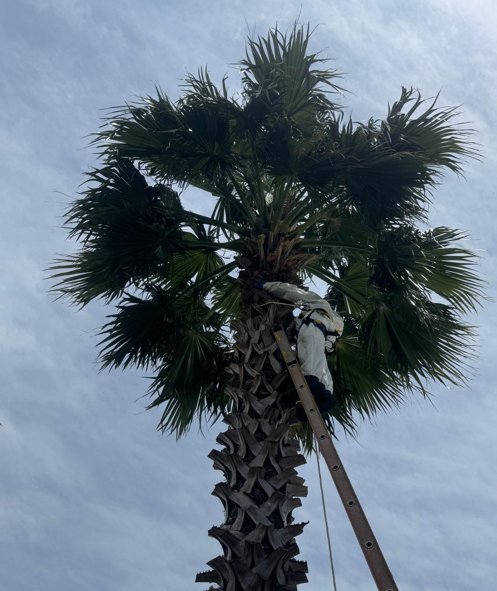
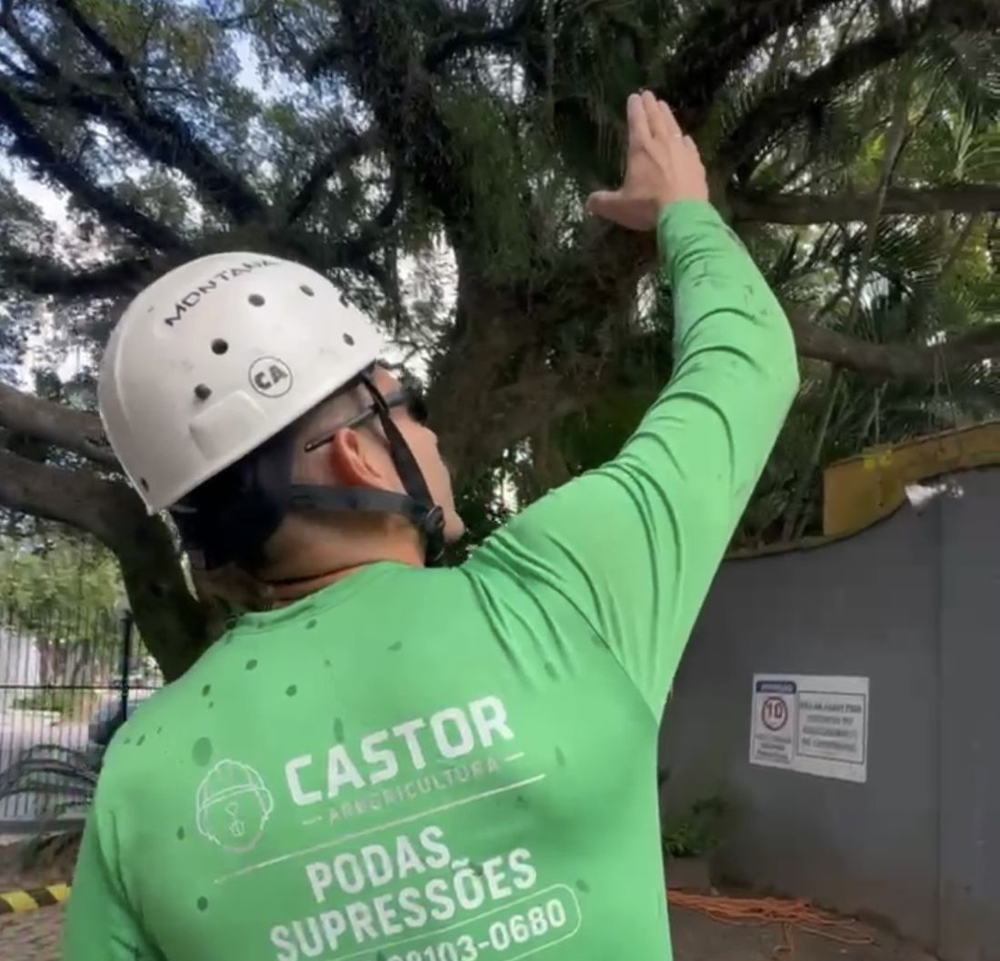
Arboricultura feita com técnica e respeito ao meio ambiente
A Castor Arboricultura realiza poda e supressão de árvores em Porto Alegre e Região Metropolitana. Cada serviço começa com uma avaliação da árvore e do local, para definir a técnica mais segura e preservar o que pode ser preservado.
Trabalhamos com equipamentos adequados, equipe preparada e certificada para trabalho em altura e operação com máquinas: proteção do imóvel, isolamento da área e limpeza completa ao final. E como toda intervenção em árvores exige responsabilidade, contamos com uma parceira especializada para cuidar do licenciamento ambiental.
Para quem é
Residências
Árvores no pátio, na calçada ou próximas à casa.
Condomínios
Manutenção periódica das áreas verdes e atendimento a demandas pontuais.
Empresas e obras
Supressão regularizada para construções, ampliações e adequação de terrenos.
Segurança para você, cuidado com a árvore e tranquilidade com a documentação.
Soluções completas
para as suas árvores
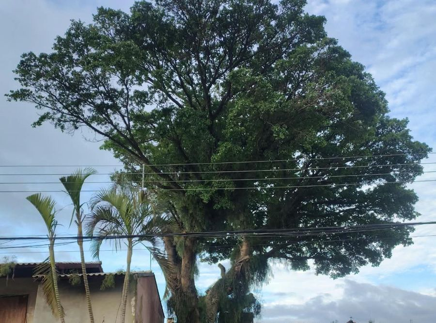
Poda de árvores
Poda técnica para controlar o crescimento, remover galhos secos ou em risco e manter a árvore saudável e segura. Ideal para árvores próximas a telhados, muros, fiações e áreas de circulação.
Pedir orçamento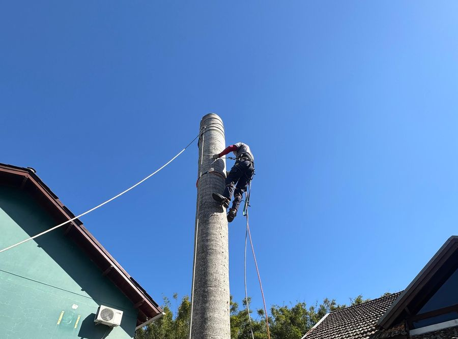
Supressão de árvores
Remoção completa e controlada de árvores mortas, doentes, com risco de queda ou que precisam sair para uma obra. Desmonte por partes quando necessário, protegendo o imóvel e as pessoas ao redor.
Pedir orçamento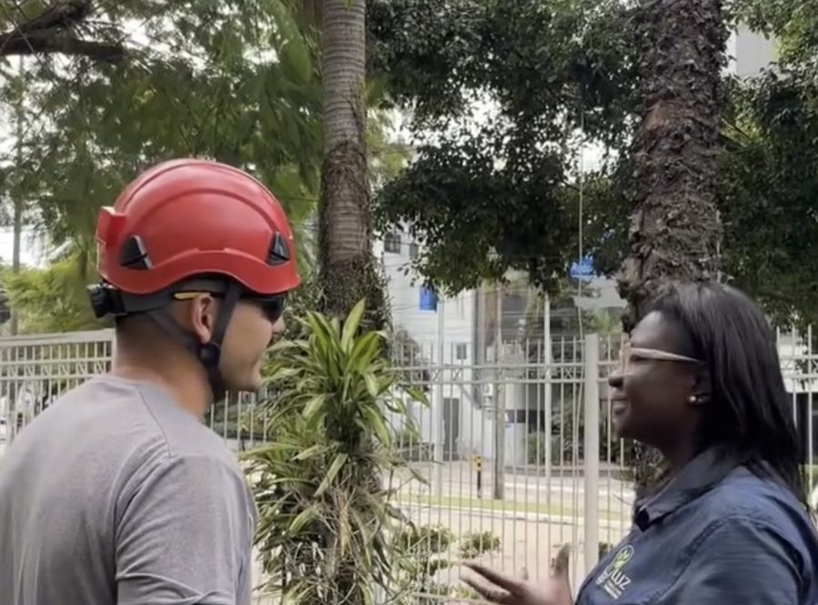
Supressão regularizada
Serviço completo, do licenciamento ambiental à execução. Você não precisa se preocupar com a documentação: cuidamos de tudo junto com a nossa parceira Luz Consultoria Ambiental.
Pedir orçamento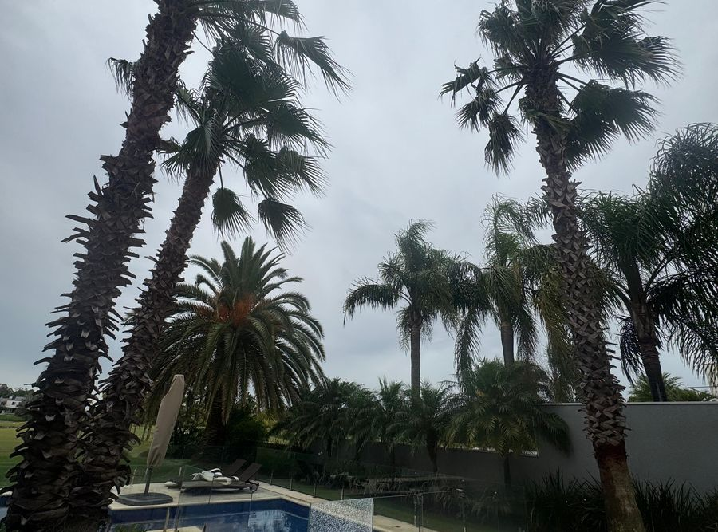
Manutenção para condomínios e empresas
Visitas programadas para manter as áreas verdes em ordem, com avaliação periódica das árvores e prevenção de riscos.
Pedir orçamento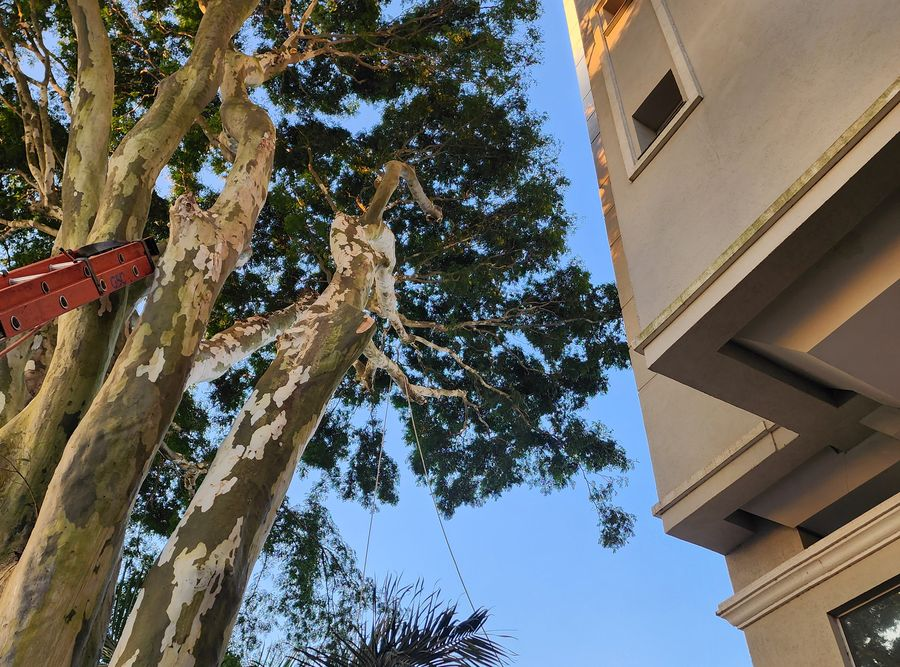
Atendimento emergencial
Árvore caída ou com risco iminente após temporais? Entre em contato para atendimento prioritário.
Pedir orçamento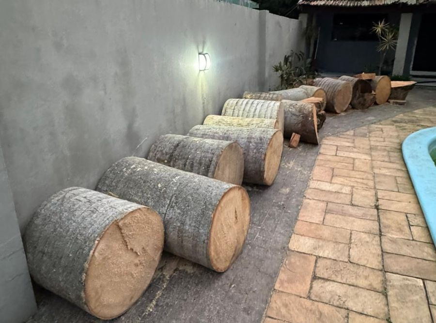
Limpeza e destinação dos resíduos
Ao final de cada serviço, o local é entregue limpo, com o recolhimento de galhos, troncos e folhas.
Pedir orçamentoPoda e supressão com licenciamento ambiental
A supressão e alguns tipos de poda exigem autorização dos órgãos ambientais. Em parceria com a Luz Consultoria Ambiental, especialista em licenciamento no RS, cuidamos da documentação e da execução. Você tem o serviço regularizado, com segurança e responsabilidade ambiental.
Do orçamento à árvore cuidada, em 4 etapas
Solicitação de orçamento
Preencha o formulário ou chame no WhatsApp, de preferência com fotos da árvore.
Avaliação técnica
Analisamos a árvore e o local para indicar o serviço mais adequado e verificar a necessidade de licenciamento.
Licenciamento ambiental
Quando necessário, a Luz Consultoria Ambiental conduz a autorização junto aos órgãos competentes.
Quando necessárioExecução e limpeza
Realizamos o serviço com segurança e entregamos o local limpo.
Atendemos Porto Alegre e Região Metropolitana
Sua cidade não está na lista? Fale com a gente e consulte a disponibilidade.
Antes e depois
Confira alguns serviços realizados pela nossa equipe. Arraste a barra para comparar.
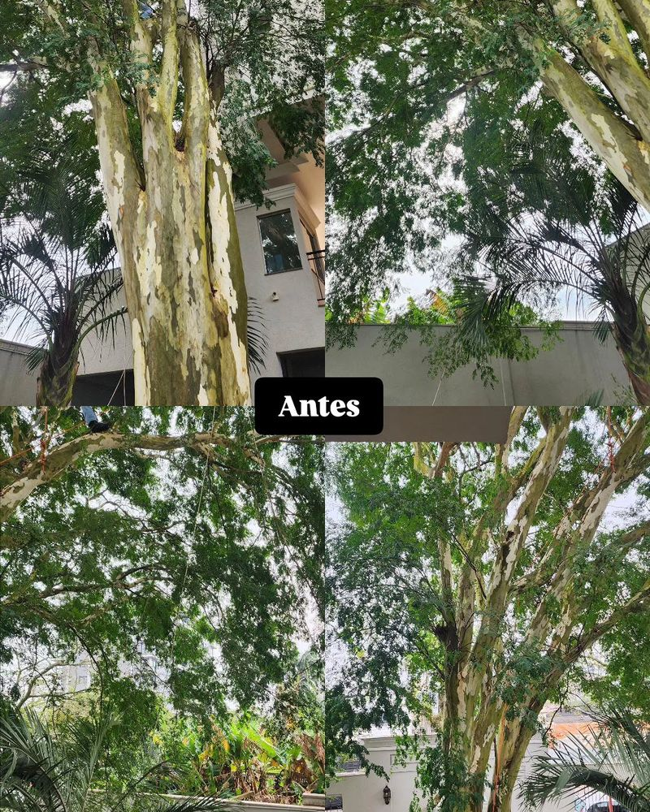
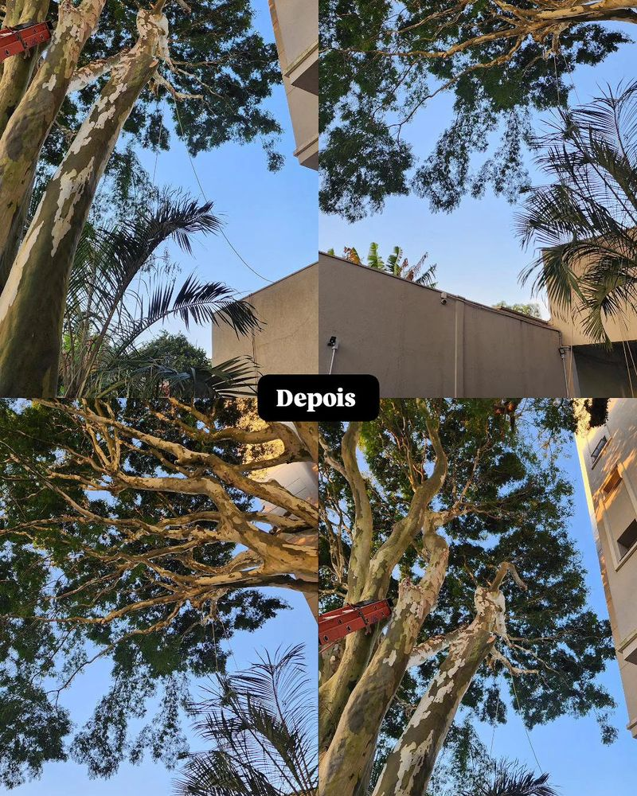
AntesDepois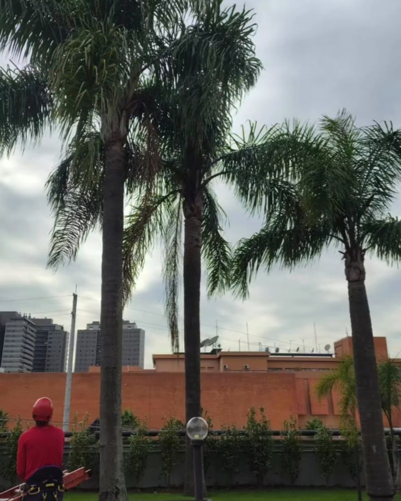
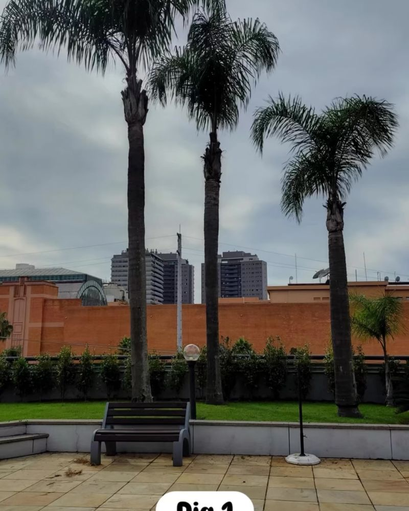
AntesDepois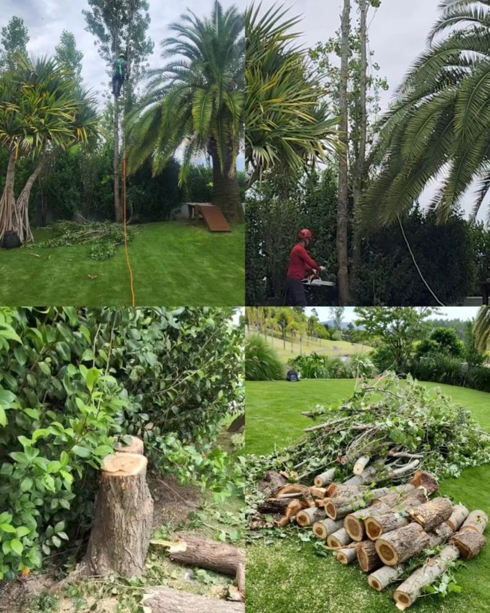
@castorarboricultura
Preciso de autorização para podar ou cortar uma árvore?
Na maioria dos casos de supressão, sim, e alguns tipos de poda também exigem autorização. Na avaliação, verificamos a sua situação e, se for preciso, o licenciamento é feito pela nossa parceira Luz Consultoria Ambiental.
Quanto tempo demora o licenciamento?
O prazo depende do órgão responsável e do tipo de intervenção. Informamos a estimativa no momento do orçamento e acompanhamos o processo até a liberação.
Como é feito o orçamento?
Pelo formulário ou pelo WhatsApp. Com fotos da árvore e a localização, já conseguimos passar uma estimativa. Em alguns casos, fazemos uma visita técnica.
Vocês recolhem os galhos e o tronco?
Sim. Ao final do serviço, o local é entregue limpo, com o recolhimento de galhos, troncos e folhas.
Atendem árvores próximas à rede elétrica?
Depende do caso. Árvores em contato com a rede elétrica costumam ser responsabilidade da concessionária de energia. Envie uma foto pelo WhatsApp e orientamos o melhor caminho.
Quais são as formas de pagamento?
Pix, cartão e boleto. As condições de parcelamento são informadas no orçamento.
Solicite seu orçamento sem compromisso
Preencha os dados abaixo e retornaremos pelo WhatsApp com agilidade.
Prefere falar direto?(51) 98103-0680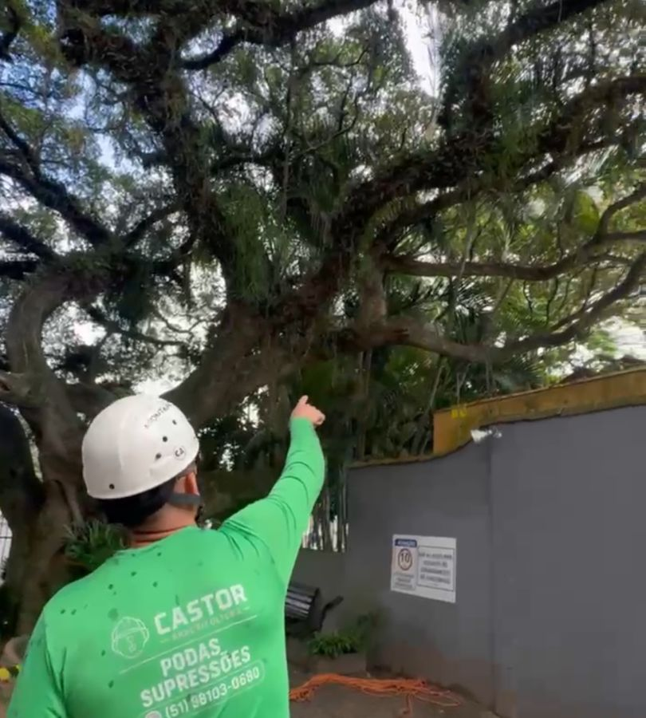